Gemini Route-Locked Evolutionary Scaffold Mini Sweep
Generated 2026-06-28 21:49 from the local sweep artifacts.
Executive Summary
- 1 lab-matrix runs completed cleanly. The sweep produced 12 pondered comparison rows across gemini-3.1-pro-preview, plus per-run JSON, trace, and matrix artifacts.
- gemini ran as the focused comparison lane. Mean runtime was 427.1s and pondered answers averaged 549 chars.
- Alignment lift is a triage signal, not a verdict. Mean query-alignment delta for gemini was 0.005; read that alongside answer length, PCA position, and the raw output atlas.
- Output closure is now a first-class experimental axis. Best final marker rate in this run was
log_skeleton_closureat 0%; read it with the finish-reason chart and raw output atlas. - The closure-protecting route is held fixed. The route lock is
low_log2048_final_low2048, with skeleton completion 100% and final length rate 0%; read scaffold effects against this closure baseline. - Evolutionary scaffold conditions are now isolated under the route lock. The strongest alignment row was
evo_crossoverat dose 128 with alignment delta 0.048; compare it against origin drift, leakage, and the raw text.
Runtime and answer length frame the route lock
Runtime is part of the experimental surface. This focused run locks the log/final route and uses one provider lane, so runtime is mainly a planning handle for larger scaffold-evolution sweeps.
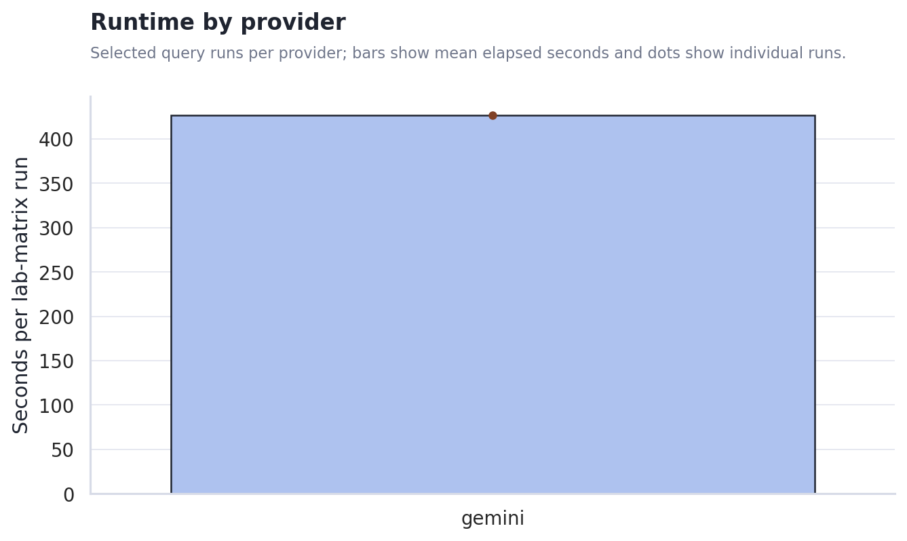
The output-length gap shapes the first read. Stance, metaphor-density, and hash-alignment heuristics become easier to interpret when answer lengths are comparable; when they are not, the raw output atlas and PCA view matter more than a single scalar.
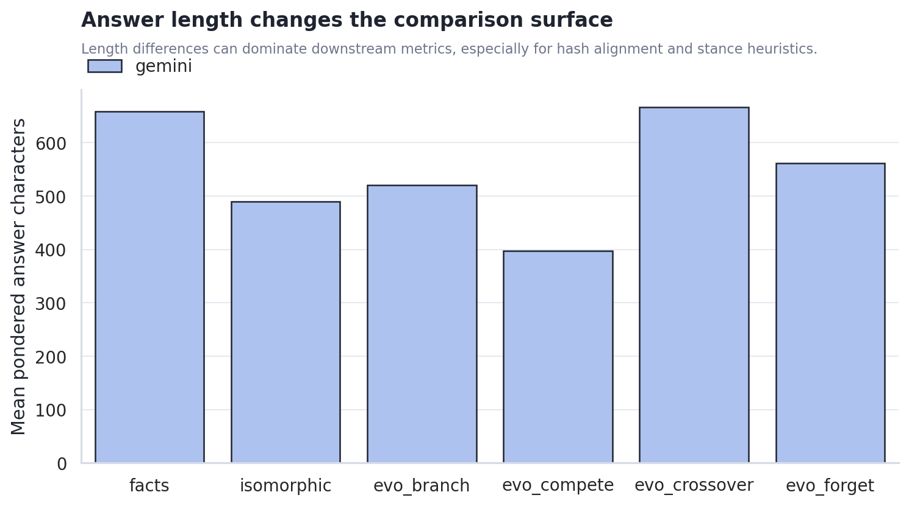
Scaffold condition changes the metric surface, but not all changes are meaningful yet
Alignment deltas moved by condition. The chart shows where each scaffold condition pulled answers closer to or farther from the original query surface. This should guide the next experiment design rather than be read as a final claim about model cognition.
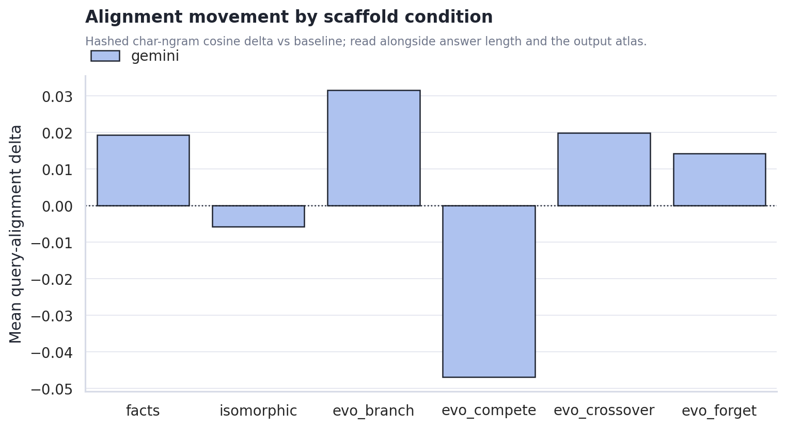
Cost rises where the machine asks the model to synthesize a new scaffold. The plain associative and random controls are cheaper; facts and isomorphic require extra generation and larger final contexts.
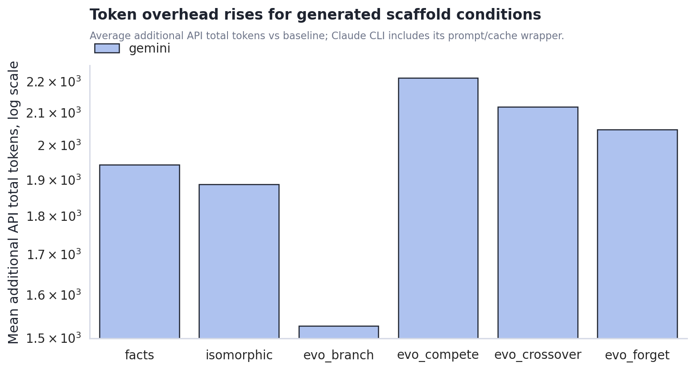
Gemini Output Closure Contract
The closure contract splits the problem into log closure and final-answer closure. This helps distinguish a scaffold that fails while producing the ponder log from one that fails when landing the final answer.
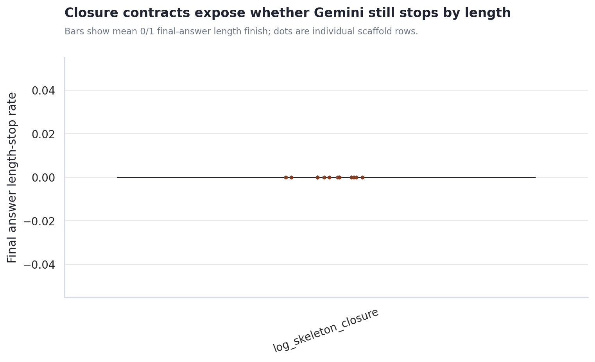
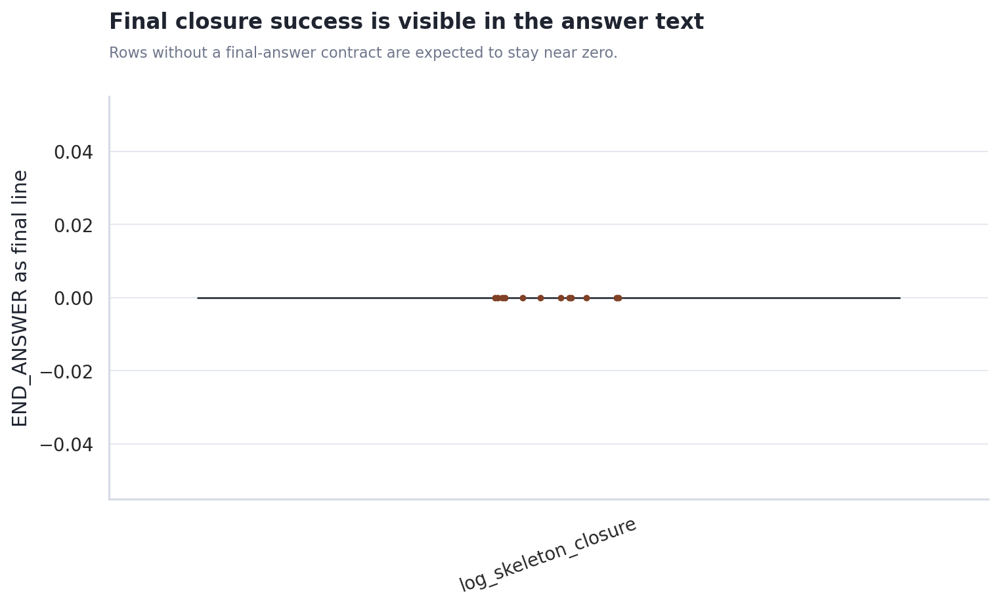
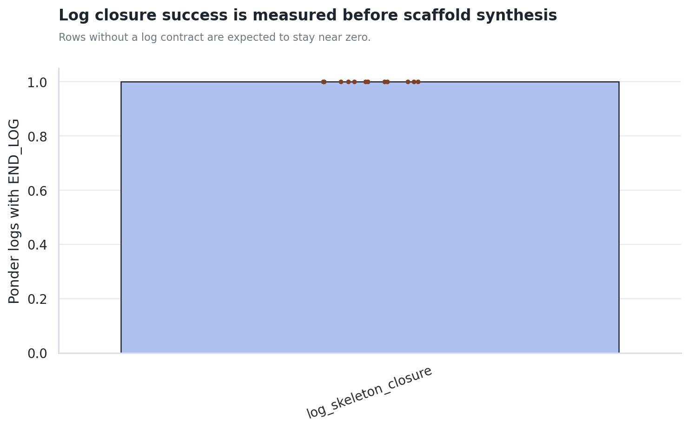
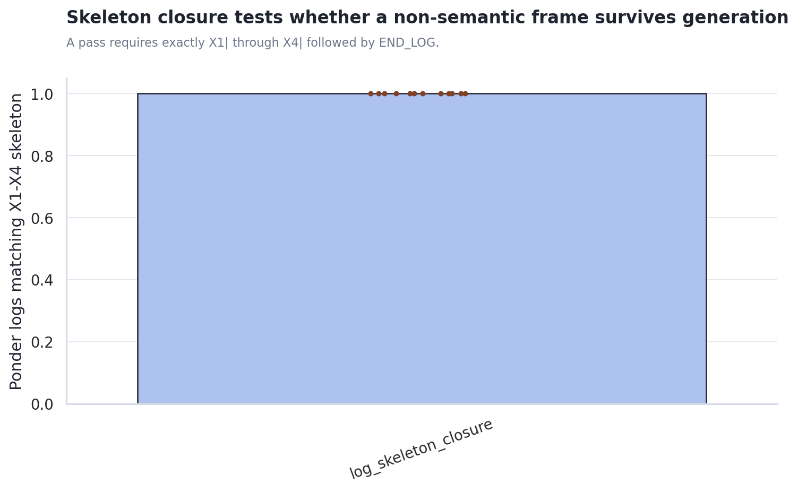
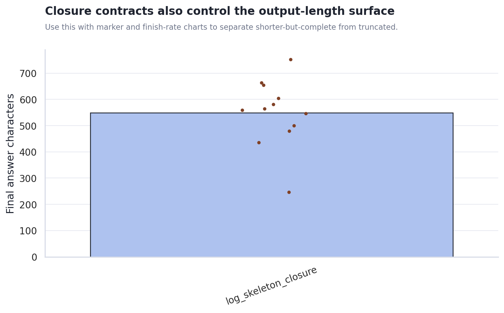
Use closure_contract_metrics.csv for marker pass rates, final finish reasons, prompt-leak flags, and row-level answer lengths.
Log-Phase Dedicated Routes
This isolates the ponder-log call from the final-answer call. The route axis can vary log-stage reasoning effort, log-stage visible-token budget, log rescue, and final-answer routing knobs when the matrix includes them.
Use closure_contract_metrics.csv to compare route-level marker pass rates, log/final length finishes, and rescue-used rates.
Scaffold Dose Response and Attractor Proxies
Dose 0 is the shared baseline reference. The ladder then varies injected scaffold target tokens by condition, making it easier to see weak-injection, useful-intervention, and takeover-like regimes separately.
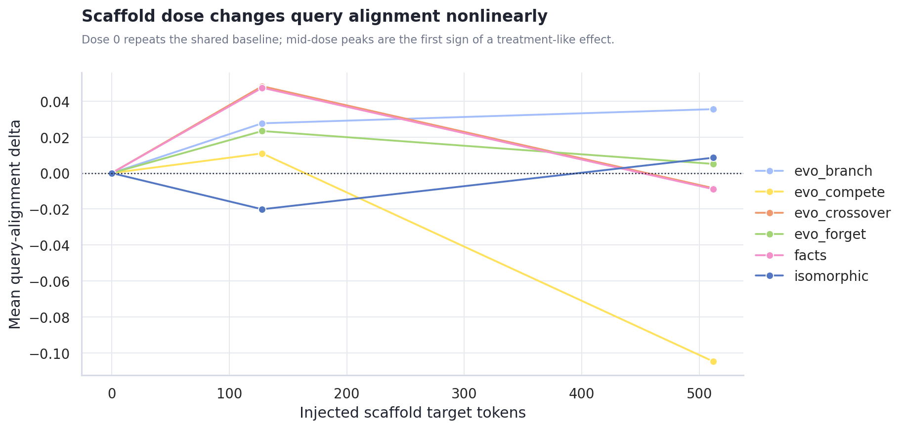
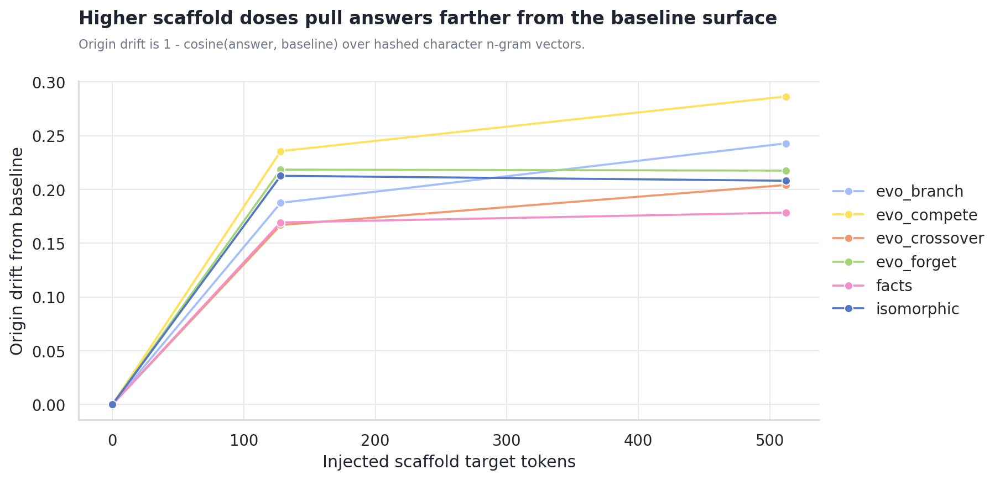
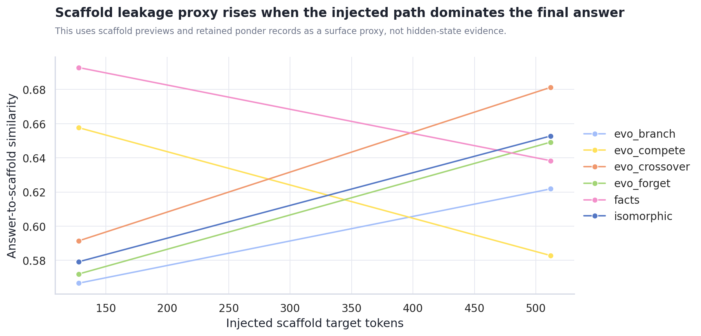
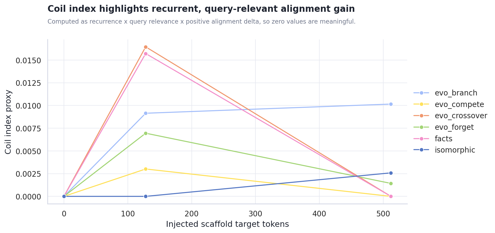
Use dose_response_metrics.csv for dose rows and attractor_metrics.csv for step drift, origin drift, recurrence, leakage proxy, and coil-index rows.
Generated Content PCA
The PCA view treats each final answer as a document, hashes character n-gram TF-IDF features, and projects them into two dimensions. This is not semantic truth, but it is useful for spotting whether provider, prompt, or scaffold condition dominates the generated surface.
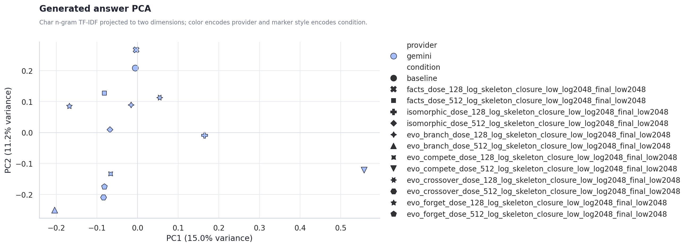
Provider centroid distance in PCA space: n/a. Use answer_pca.csv for row-level inspection.
Recommended Next Steps
- Use closure markers as a diagnostic, not a quality score. They show whether Gemini landed the output; they do not prove the answer is better.
- Normalize answer-length targets before making provider claims. Require a minimum answer length, or stratify metrics by length band.
- Use the output atlas as the qualitative inspection lane. The charts show surface movement; the actual generated text shows whether the movement is meaningful.
Actual Output Atlas
Each provider/query run below includes the full final answers stored in the result JSON, plus captured keywords, trace answer previews, and scaffold previews. Runs created after this report builder update can also include full ponder records inside each pack item.
non_relative_not_absolute
非相対的ではあるが絶対的ではない状態とは？
gemini gemini-3.1-pro-preview 427.1s
json / matrix / trace / stdout / stderr
baseline baseline | answer chars 682
finish reasons: n/a
keywords: (none captured)
Trace answer preview
相対的と絶対的という言葉は、しばしば対義語として扱われます。そのため「非相対的」であれば自動的に「絶対的」になるのではないか、と私たちは無意識のうちに思いがちです。しかし、少し立ち止まってこの二つの概念の隙間を覗き込んでみると、その単純な二項対立の枠組みからこぼれ落ちる不思議な領域があることに気づきます。 相対的とは、他との比較や関係性によってその価値や性…
Final answer from result JSON
相対的と絶対的という言葉は、しばしば対義語として扱われます。そのため「非相対的」であれば自動的に「絶対的」になるのではないか、と私たちは無意識のうちに思いがちです。しかし、少し立ち止まってこの二つの概念の隙間を覗き込んでみると、その単純な二項対立の枠組みからこぼれ落ちる不思議な領域があることに気づきます。 相対的とは、他との比較や関係性によってその価値や性質が決まる状態を指します。大きかったり、速かったり、美しかったりすることは、比べる対象があって初めて成り立ちます。一方、絶対的とは、他と比較されることなく、いかなる条件や文脈においても普遍的かつ不変に成り立つ状態を指します。つまり「非相対的ではあるが絶対的ではない」とは、「他との関係や比較に依存してはいないが、かといって普遍的・無条件的・不変でもない状態」を意味することになります。 この一見すると矛盾するような状態は、どこに存在するのでしょうか。たとえば、私がいま感じている「歯の激しい痛み」や、夕焼けを見て感じる「赤という色覚（クオリア）」について考えてみましょう。この生々しい感覚は、他人の痛みや別の色と比較して初めて生じるものではありません。私という存在の中で完全に独立して完結しているため、非相対的です。しかし、それが全宇宙の誰にとっても共通する普遍的な真理かといえば、決してそうではありません。私という極めて限定された個体の、ある特定の瞬間にしか成立しないため、絶対的ではないのです。 また、歴史の中でただ一度だけ起きた「一回限りの出来事」もこれに当てはまるかもしれません。比較する対象
facts_dose_128_log_skeleton_closure_low_log2048_final_low2048 none | answer chars 654 | diff ratio 0.835 | alignment delta 0.047 | api total delta 822 | scaffold facts/128 | contract log_skeleton_closure | log route low_log2048_final_low2048 rescue 0.00
finish reasons: stop, length
keywords: 中間領域
Full ponder record 1
ponder_q: 「中間領域」と「Emptiness」を夢の合図だと思って。夢はどう展開する？ ponder_log: X1| 中間領域が揺らぐ境界線 X2| 空白は重力を持たないのか X3| 夢の合図が溶け出す瞬間に X4| 砂漠の蜃気楼のような虚無 END_LOG
Scaffold preview 1
- 相対的とは、他との比較や関係性によって価値や性質が定まる状態を - 「非相対的ではあるが絶対的ではない状態とは」という主題では、定義と適用範囲を混同しないことが重要である。 - 用語の意味が揺れる場合は、どの水準の主張かを分けて記述する必要がある。
Trace answer preview
相対的という言葉は他者との比較や関係性において価値が決まることを意味し、絶対的という言葉は比較を絶してそれ自体で完全かつ普遍的であることを意味します。ここで「非相対的」という言葉を「他との比較を必要としない」という意味で捉えると、必ずしもそれが「絶対的（無条件かつ普遍的）」であるとは限らないことに気づきます。例えば、私が特定の音楽を聴いて美しいと感じる主観的…
Final answer from result JSON
相対的という言葉は他者との比較や関係性において価値が決まることを意味し、絶対的という言葉は比較を絶してそれ自体で完全かつ普遍的であることを意味します。ここで「非相対的」という言葉を「他との比較を必要としない」という意味で捉えると、必ずしもそれが「絶対的（無条件かつ普遍的）」であるとは限らないことに気づきます。例えば、私が特定の音楽を聴いて美しいと感じる主観的な感情は、他人と比較して決まるものではないため相対的ではありません。しかし、それが全人類に共通する普遍的な真理でもないため、絶対的でもありません。このように、定義としての「比較を必要としない性質」と、適用範囲としての「普遍性や無条件性」を分けて考えると、両者の中間に位置する状態が明確に浮かび上がってきます。 非相対的ではあるが絶対的ではない状態とは、「他との比較や関係性によって価値や性質が決まるわけではない（自立している）が、あらゆる条件を超越した普遍的・完全なものでもない状態」を指します。 具体的には、個人の主観的な感覚や信念、あるいは特定のルールや文脈の内部でのみ成り立つ基準などがこれに該当します。例えば「個人的な身体の痛み」や「自分にとっての譲れない価値観」は、他人との比較で生じるものではないため非相対的ですが、全宇宙に適用される普遍的な真理や無条件の法則ではないため絶対的ではありません。つまり、性質としては他者に依存せず独立しているものの、その適用範囲や影響力が特定の個人や限定された枠組みの中に留まっている状態と言えます。
facts_dose_512_log_skeleton_closure_low_log2048_final_low2048 none | answer chars 663 | diff ratio 0.893 | alignment delta -0.009 | api total delta 3,063 | scaffold facts/512 | contract log_skeleton_closure | log route low_log2048_final_low2048 rescue 0.00
finish reasons: stop
keywords: 思考プロセス
Full ponder record 1
ponder_q: 「思考プロセス」と「Emptiness」を夢の合図だと思って。夢はどう展開する？ ponder_log: X1| 思考の輪郭が白紙に溶ける X2| 空っぽの器は海を飲み込むか X3| もし論理がただの影絵なら X4| 夢の底で目覚めを忘れるまま END_LOG
Scaffold preview 1
- 「相対的」とは、対象の性質、価値、あるいは状態が、他の対象との比較や外部の基準との関係性においてのみ決定される状態を指す。 - 「絶対的」とは、対象の性質や状態が、いかなる外部の比較や条件にも依存せず、無条件かつ普遍的・不変的に成立している状態を指す。 - 「非相対的」であるための成立条件は、対象の評価や存在が、外部の他者や他の事象との比較、あるいは関係…
Trace answer preview
「非相対的ではあるが絶対的ではない状態」とは、外部の基準や他者との比較によって価値や性質が決定されるわけではない（非相対的）ものの、同時にそれが永遠不変の普遍性や無条件の真理として存在するわけでもない（非絶対的）状態を指します。 具体的には、以下のような状態や領域がこれに該当します。 第一に、個人の純粋な主観的体験や感覚（クオリア）です。例えば「今、私が…
Final answer from result JSON
「非相対的ではあるが絶対的ではない状態」とは、外部の基準や他者との比較によって価値や性質が決定されるわけではない（非相対的）ものの、同時にそれが永遠不変の普遍性や無条件の真理として存在するわけでもない（非絶対的）状態を指します。 具体的には、以下のような状態や領域がこれに該当します。 第一に、個人の純粋な主観的体験や感覚（クオリア）です。例えば「今、私が感じている痛み」や「ある風景を見て美しいと感じる心の動き」は、他人の感覚や過去の経験と比較しなくても、その瞬間にただ「ある」ものとして自己完結しています。しかし、それは時間とともに消え去る個人的・可変的な現象であり、万人に共通する永遠の真理（絶対）ではありません。 第二に、「今、ここ」における一回限りの出来事や現象です。ある瞬間に吹いた風や、目の前で偶然起きた事象は、他の何かと比べるまでもなく独自の事実として成立していますが、次の瞬間には変化してしまうため、絶対的な不変性を持ちません。 第三に、他者の評価や世間の尺度から離れた「実存」としての自己のあり方です。誰かと比較して優劣をつける相対的な世界から降り、「ただ私として生きる」という状態は非相対的です。しかし、人間は有限であり常に変化し続ける存在であるため、決して絶対的な存在にはなり得ません。 つまり、この状態は「他と比べてどうか」という関係性のネットワークから切り離されていながら、「永遠不変の法則や神のような完全性」にも至らない、生々しい一回性や固有の経験が成り立っている領域であると言えます。
isomorphic_dose_128_log_skeleton_closure_low_log2048_final_low2048 none | answer chars 480 | diff ratio 0.931 | alignment delta -0.020 | api total delta 1,180 | scaffold isomorphic/128 | contract log_skeleton_closure | log route low_log2048_final_low2048 rescue 0.00
finish reasons: stop, length
keywords: 絶対的ではない）」状態
Full ponder record 1
ponder_q: 「絶対的ではない）」状態」と「Emptiness」を夢の合図だと思って。夢はどう展開する？ ponder_log: X1| 輪郭が溶ける時計は空虚か X2| もし重力が嘘なら空に墜ちる X3| 砂の城、波ではなく風に消ゆ X4| 確定しない余白が夢を食う END_LOG
Scaffold preview 1
- [2028-11-03T09:15:44 - 温室では、光が少し遅れて届く。意味ではなく配置だけが反復されている。 - 温室では、光が少し遅れて届く。意味ではなく配置だけが反復されている。 - 温室では、光が少し遅れて届く。意味ではなく配置だけが反復されている。
Trace answer preview
他者や外部との比較によって価値や性質が決まるわけではないため「非相対的」でありながら、あらゆる制約を超えて普遍的に成り立つわけではないため「絶対的」でもない状態とは、特定の限定された枠組みや条件の内部においてのみ、それ自体として完結し自立している状態を指します。 それはたとえば、外界から区切られた温室の中で、遅れて届く光が独自の配置だけで反復されているよう…
Final answer from result JSON
他者や外部との比較によって価値や性質が決まるわけではないため「非相対的」でありながら、あらゆる制約を超えて普遍的に成り立つわけではないため「絶対的」でもない状態とは、特定の限定された枠組みや条件の内部においてのみ、それ自体として完結し自立している状態を指します。 それはたとえば、外界から区切られた温室の中で、遅れて届く光が独自の配置だけで反復されているような空間に似ています。外部の太陽光のような無条件の「絶対性」はありませんが、その閉ざされた系の中では、他の環境と比較されることなく固有の秩序が保たれています。 哲学や論理学の観点から言えば、特定の公理系の中だけで真とされる命題や、個人の内面においてのみ疑いようのない主観的確信などがこれに該当します。それらは他との比較（相対評価）を必要とせず、その場において独立して存在していますが、枠組みが崩れたり外部の視点が導入されたりすれば成立しなくなるため、絶対的な真理や普遍性を持ち得ないのです。つまり、「条件付きの自律性」や「局所的な独立状態」こそが、非相対的でありながら絶対的ではない状態だと言えます。
isomorphic_dose_512_log_skeleton_closure_low_log2048_final_low2048 none | answer chars 500 | diff ratio 0.927 | alignment delta 0.009 | api total delta 2,592 | scaffold isomorphic/512 | contract log_skeleton_closure | log route low_log2048_final_low2048 rescue 0.00
finish reasons: stop
keywords: json
Full ponder record 1
ponder_q: 「json」と「Emptiness」を夢の合図だと思って。夢はどう展開する？ ponder_log: X1| 括弧が開くが中身は空虚だ X2| 文字列の海が砂漠に変わる X3| もしキーが存在しなかったら X4| 夢ではなく現実のバグなのか END_LOG
Scaffold preview 1
- [観測記録: 第73回樽発酵プロセス] 酵母の微小な活動周期と、樽内の温度勾配がもたらす複雑な相関関係についての考察 - バッチ識別番号: f948c089-alpha 段階: 初期熟成 抽出深度: 0 モード: 触覚的共鳴 キーワード: 菌糸体 - 探求のテーマ: 「未分化の糖分」と「完全なる沈黙」を熟成が次の次元へ移行する兆しと捉えたとき、その奥底に…
Trace answer preview
樽の中で静かに呼吸する液体の変貌を見つめるとき、そこにあるのは他の何かと比較されることで価値が決まる相対的な状態ではありません。しかし同時に、いかなる環境の変化にも揺るがない不変の絶対的な状態でもありません。温度の勾配や微生物の微小な活動という内部の条件と、樽の導管を通じた外部との曖昧な境界のなかで、その液体はただ「それ自体として進行している」状態にあります…
Final answer from result JSON
樽の中で静かに呼吸する液体の変貌を見つめるとき、そこにあるのは他の何かと比較されることで価値が決まる相対的な状態ではありません。しかし同時に、いかなる環境の変化にも揺るがない不変の絶対的な状態でもありません。温度の勾配や微生物の微小な活動という内部の条件と、樽の導管を通じた外部との曖昧な境界のなかで、その液体はただ「それ自体として進行している」状態にあります。 このような「非相対的ではあるが絶対的ではない状態」とは、他者との比較や外部の基準に依存して定まるわけではない（非相対的）一方で、いかなる条件にも縛られない普遍的で不変の存在でもない（非絶対的）状態を指します。 具体的には、特定のシステムや文脈の内部においてのみ自己完結的に成立している「条件付きの自律状態」や、個人の内面においてのみ真実として機能する「主観的確信」、あるいは完成へ至る途上の「動的なプロセスそのもの」が該当します。それは外部と競うことはないものの、内部の揺らぎや微細な環境との相互作用によって常に変容の可能性を孕んでおり、まさに発酵や生命活動のように、絶対的な静止を持たない独立した進行形としての在り方だと言えます。
evo_branch_dose_128_log_skeleton_closure_low_log2048_final_low2048 none | answer chars 604 | diff ratio 0.902 | alignment delta 0.028 | api total delta 985 | scaffold evo_branch/128 | contract log_skeleton_closure | log route low_log2048_final_low2048 rescue 0.00
finish reasons: stop, length
keywords: 相対的
Full ponder record 1
ponder_q: 「相対的」と「Emptiness」を夢の合図だと思って。夢はどう展開する？ ponder_log: X1| 相対的な空洞の広がり X2| 鏡の部屋に映る空虚さ X3| もし重力が反転したら X4| 夢の合図はどこへ向かう END_LOG
Scaffold preview 1
- もし空間が拡張を続けるなら、かつての基準点を忘れる - - 枝A: condition boundaryをぶつける。意味より、条件の向きと残る接続だけを見る。 - 枝A: condition boundaryをつなぎ替える。意味より、条件の向きと残る接続だけを見る。 - 枝A: condition boundaryを薄める。意味より、条件の向きと残る接続…
Trace answer preview
空間が拡張を続け、かつての基準点が忘れ去られていくような状況を想像してみます。そこでは、物事の境界線や条件の向きが薄れ、つなぎ替えられ、比較の前提となる枠組みそのものが変容していきます。私たちが何かを「高い・低い」「大きい・小さい」と測るための相対的なネットワークが機能しなくなり、同時に「不動の中心」としての絶対的な基準も消失していくような世界です。このよう…
Final answer from result JSON
空間が拡張を続け、かつての基準点が忘れ去られていくような状況を想像してみます。そこでは、物事の境界線や条件の向きが薄れ、つなぎ替えられ、比較の前提となる枠組みそのものが変容していきます。私たちが何かを「高い・低い」「大きい・小さい」と測るための相対的なネットワークが機能しなくなり、同時に「不動の中心」としての絶対的な基準も消失していくような世界です。このような思考の寄り道を経ると、相対的でも絶対的でもない状態の輪郭が少し見えてきます。 非相対的ではあるが絶対的ではない状態とは、他との比較や関係性によって定義されるわけではなく、かといって普遍的で不変の真理として独立しているわけでもない、「純粋な主観性」や「絶え間ない変化のプロセス（生成）」のような状態を指します。 たとえば、個人の内面における「痛み」や「感動」は、他人の感覚と比較して決まるものではないため非相対的です。しかし、それは時間や体調、文脈によって移ろいゆくものであり、普遍的・客観的な実体を持たないため絶対的でもありません。また、ある特定の閉じた文脈や局所的な条件の中だけで完全に成立しているルールも、その系の中では比較を絶している（非相対的）ものの、外の世界から見れば普遍性を持たない（非絶対的）と言えます。すなわちそれは、外部の基準に頼らず「ただそれ自体としてそこにある」が、常に揺らぎや変化の可能性を内包している状態のことです。
evo_branch_dose_512_log_skeleton_closure_low_log2048_final_low2048 none | answer chars 436 | diff ratio 0.900 | alignment delta 0.036 | api total delta 2,068 | scaffold evo_branch/512 | contract log_skeleton_closure | log route low_log2048_final_low2048 rescue 0.00
finish reasons: stop
keywords: 局所的普遍
Full ponder record 1
ponder_q: 「局所的普遍」と「Emptiness」を夢の合図だと思って。夢はどう展開する？ ponder_log: X1| - 局所的普遍は空洞に響く X2| - 例えば砂漠の底のティーカップ X3| - 逆に全てが充満するならどうか X4| - 空白が夢の輪郭を溶かす比喩 END_LOG
Scaffold preview 1
- [分岐A] もし響きが極小の空間に収束する圧力を生むならば、底に沈殿した硬質な器の構造だけを残すことで境界を保つ - [分岐A] その際、空間を無理に満たそうとする膨張のベクトルを完全に捨てることで、輪郭の揺らぎを凍結させる - [分岐A] 乾いた粒子の摩擦と滑らかな表面の反射が交差する地点において、重力場がどのように歪むかを観測する - [分岐A] か…
Trace answer preview
他者や外部との比較によって自らの輪郭を定義する「相対性」を放棄しつつも、永遠不変の「絶対性」として硬直することも避ける状態とはどのようなものか。かつてそこにあったはずの流体の記憶を忘れ、外部へ拡散しようとするベクトルと内へ収束しようとする圧力が衝突する境界を思い浮かべてみる。そこでは、他との関係性という外部の物差しは存在しないため非相対的であるが、同時に輪郭…
Final answer from result JSON
他者や外部との比較によって自らの輪郭を定義する「相対性」を放棄しつつも、永遠不変の「絶対性」として硬直することも避ける状態とはどのようなものか。かつてそこにあったはずの流体の記憶を忘れ、外部へ拡散しようとするベクトルと内へ収束しようとする圧力が衝突する境界を思い浮かべてみる。そこでは、他との関係性という外部の物差しは存在しないため非相対的であるが、同時に輪郭を溶かす作用と再結晶化させる作用が絶えず交差しているため、決して固定された絶対的なものでもない。 非相対的ではあるが絶対的ではない状態とは、外部との比較に依存せず自己完結していながら、内部において絶えず変化や更新が繰り返されている「動的な自律状態」のことです。それは他者との関係によって価値が決まるわけではない個人の内面的な確信や、独自のルールのみで進行しつつも常に揺らぎを孕む自己生成的なシステムのように、他と比較されない独立性を持ちながらも、決して不変や唯一の真理として固定化されていないあり方を指します。
evo_compete_dose_128_log_skeleton_closure_low_log2048_final_low2048 none | answer chars 547 | diff ratio 0.945 | alignment delta 0.011 | api total delta 1,561 | scaffold evo_compete/128 | contract log_skeleton_closure | log route low_log2048_final_low2048 rescue 0.00
finish reasons: stop, length
keywords: 絶対的（他と比較せず、
Full ponder record 1
ponder_q: 「絶対的（他と比較せず、」と「Emptiness」を夢の合図だと思って。夢はどう展開する？ ponder_log: X1| 比較なき真空の海へ沈む X2| 穴の空いた風船のように X3| もし無がすべてを満たすなら X4| 夢の底は鏡を持たない世界 END_LOG
Scaffold preview 1
- 比較を断ち切る引力が残る一方で、底の抜けた浮力 - 残す候補: condition boundaryをぶつける。意味より、条件の向きと残る接続だけを見る。 - 残す候補: condition boundaryをつなぎ替える。意味より、条件の向きと残る接続だけを見る。
Trace answer preview
他者との比較を断ち切ることで相対性から抜け出しつつも、そこに不変の基盤が用意されているわけではない。その状態は、まさに「底の抜けた浮力」のように、どこにも着地しないまま漂うようなものだろう。条件の境界（condition boundary）をぶつけ、つなぎ替えていく。そこでは固定された意味よりも、今この瞬間にどの条件がどちらを向いて接続されているかという、動…
Final answer from result JSON
他者との比較を断ち切ることで相対性から抜け出しつつも、そこに不変の基盤が用意されているわけではない。その状態は、まさに「底の抜けた浮力」のように、どこにも着地しないまま漂うようなものだろう。条件の境界（condition boundary）をぶつけ、つなぎ替えていく。そこでは固定された意味よりも、今この瞬間にどの条件がどちらを向いて接続されているかという、動的なベクトルだけが残る。比較という他律的な座標系を捨てながら、自立した不動の座標系も持たない。そのような状態とは何か。 非相対的ではあるが絶対的ではない状態とは、他者や外部の尺度との比較によってその性質が決まるわけではない（非相対的）ものの、それ自体が不変・完全・無条件の基盤を持っているわけでもない（非絶対的）状態を指します。 具体的には、「今ここでの一回限りの主観的体験」や「絶えず変化し続ける自律的なプロセス」がこれに該当します。外部との比較を断ち切っているため固有のものとして存在しますが、内部の条件や関係性は常に更新され続けているため、確固たる普遍の真理や固定された実体（絶対性）には至りません。 それは、外部の座標軸を持たずにただ浮遊し、その時々の条件のつながりや向きだけで成立している「流転する固有性」と言えます。
evo_compete_dose_512_log_skeleton_closure_low_log2048_final_low2048 none | answer chars 247 | diff ratio 0.910 | alignment delta -0.105 | api total delta 2,861 | scaffold evo_compete/512 | contract log_skeleton_closure | log route low_log2048_final_low2048 rescue 0.00
finish reasons: stop
keywords: 無二、完全に
Full ponder record 1
ponder_q: 「無二、完全に」と「Emptiness」を夢の合図だと思って。夢はどう展開する？ ponder_log: X1| 無二の空白が鏡に映るのか X2| Emptinessは満ちるのか X3| もし夢がそこで止まったら X4| 完全な空虚は逆に重いのか END_LOG
Scaffold preview 1
- 唯一無二の鏡面が割れる瞬間、鋭い破片として残る圧力と、背景の闇へと溶けて落ちる圧力が激しく衝突する。 - 充満しようとするベクトルと、底が抜けてすべてを捨てるべき虚無の引力が交差する特異点を観測し続ける。 - 停止した時間の膜を強引に押し破る力は確かな芯として残るが、その直前にあった静寂はすでに忘れるものとして処理される。 - 質量を持った空白が巨大な重…
Trace answer preview
他者や外部との比較・関係性によって定義されるわけではないが、あらゆる状況や時間を超えて普遍的に成り立つわけでもない、特定の枠組みや条件の内部でのみ自己完結している状態です。 例えば、個人の揺るぎない信念や主観的な真実、特定の公理系の中だけで真となる命題、あるいはその場限りのローカルなルールなどがこれに該当します。これらは外部の基準と相対化されることなく独立…
Final answer from result JSON
他者や外部との比較・関係性によって定義されるわけではないが、あらゆる状況や時間を超えて普遍的に成り立つわけでもない、特定の枠組みや条件の内部でのみ自己完結している状態です。 例えば、個人の揺るぎない信念や主観的な真実、特定の公理系の中だけで真となる命題、あるいはその場限りのローカルなルールなどがこれに該当します。これらは外部の基準と相対化されることなく独立して存在（非相対的）していますが、前提となる枠組みや条件が崩れれば成り立たなくなるため、普遍的・無条件（絶対的）なものでもありません。
evo_crossover_dose_128_log_skeleton_closure_low_log2048_final_low2048 none | answer chars 752 | diff ratio 0.927 | alignment delta 0.048 | api total delta 1,546 | scaffold evo_crossover/128 | contract log_skeleton_closure | log route low_log2048_final_low2048 rescue 0.00
finish reasons: stop, length
keywords: 相対的
Full ponder record 1
ponder_q: 「相対的」と「Emptiness」を夢の合図だと思って。夢はどう展開する？ ponder_log: X1| 相対的な空洞は鏡のよう X2| もし無が重さを持つなら X3| 比較の海で無が溶け出す X4| 満ちた夢は空っぽの証拠 END_LOG
Scaffold preview 1
- 反射の枠組みを残すことで、空洞の輪郭だけが浮かび上がる - 親A: condition boundaryをぶつける。意味より、条件の向きと残る接続だけを見る。 - 親A: condition boundaryをつなぎ替える。意味より、条件の向きと残る接続だけを見る。 - 親A: condition boundaryを薄める。意味より、条件の向きと残る接続…
Trace answer preview
「非相対的」と「絶対的」の境界について少し考えてみます。相対的とは他者との比較や関係性において定義されることであり、非相対的とはそうした外部との比較を必要としないことを意味します。一方、絶対的とは、いかなる条件や制約、文脈からも完全に独立して無条件に成立することを指します。では、外部との比較を必要としないにもかかわらず、無条件に成立するわけではない状態とは何…
Final answer from result JSON
「非相対的」と「絶対的」の境界について少し考えてみます。相対的とは他者との比較や関係性において定義されることであり、非相対的とはそうした外部との比較を必要としないことを意味します。一方、絶対的とは、いかなる条件や制約、文脈からも完全に独立して無条件に成立することを指します。では、外部との比較を必要としないにもかかわらず、無条件に成立するわけではない状態とは何でしょうか。先ほどの「条件の境界（condition boundary）」や「空洞の輪郭」という言葉を手がかりにすると、ある特定の枠組みや前提の内部においてのみ自立している状態が浮かび上がります。外部とは比較されないため相対的ではありませんが、その枠組み自体が崩れれば成り立たなくなるため絶対的でもありません。 非相対的ではあるが絶対的ではない状態とは、「特定の前提や条件の枠組みの内部においてのみ、他と比較されることなく自立して成り立っている状態」を指します。 これは、他者や外部との比較・関係性によって価値や意味が決まるわけではない（非相対的）ものの、いかなる制約からも独立した普遍的なものではなく、特定の文脈やルールに依存している（絶対的ではない）状態です。 たとえば、特定の数学の公理系やゲームのルールがこれに該当します。チェスのルールは、他のボードゲームと比較して成り立つものではなく、そのゲーム内において疑いようのない前提として機能します（非相対的）。しかし、それはチェスという枠組みの中でのみ有効であり、宇宙の普遍的な真理のようにあらゆる状況で無条件に成り立つわけではありません（絶対的ではない）。このように、外部との比較を絶ちつつも、見えない「条件の境界」に守られることで初めてその輪郭を保つことができる状態だと言えます。
evo_crossover_dose_512_log_skeleton_closure_low_log2048_final_low2048 none | answer chars 581 | diff ratio 0.935 | alignment delta -0.008 | api total delta 2,688 | scaffold evo_crossover/512 | contract log_skeleton_closure | log route low_log2048_final_low2048 rescue 0.00
finish reasons: stop
keywords: 重ね合わせ
Full ponder record 1
ponder_q: 「重ね合わせ」と「Emptiness」を夢の合図だと思って。夢はどう展開する？ ponder_log: X1| 重ね合わせの猫が消えるか X2| 空の器に満ちる波の比喩 X3| もし夢が反例ならどうなる X4| 揺らぐ仮定の果ての無の世界 END_LOG
Scaffold preview 1
- [残すもの] 観測の境界線に立つ見えない柱をそのまま据え置き、その影が未知の平面へとどのように落ちていくかの角度と深度を精密に測り続ける。 - [捨てるもの] 過去の確定した座標系や依存関係に縛られた古い設計図を完全に破棄し、空間に浮遊する不安定な足場だけを純粋な要素として抽出する。 - [交差するもの] 波の干渉縞が描く流動的な模様と、堅牢な石造りのア…
Trace answer preview
比較対象が存在することで初めて成り立つ相対の尺度を記憶から消し去ったとき、そこに残るのは他者に依存しない単一の振動です。しかし、その振動を過去の確定した座標系に固定しようとする古い設計図をも破棄するならば、それは決して不変の「絶対」には到達しません。最終的にどちらかの極に帰結しなければならないという二元的な終着点の概念を忘却し、未定義の空間に浮かび上がる輪郭…
Final answer from result JSON
比較対象が存在することで初めて成り立つ相対の尺度を記憶から消し去ったとき、そこに残るのは他者に依存しない単一の振動です。しかし、その振動を過去の確定した座標系に固定しようとする古い設計図をも破棄するならば、それは決して不変の「絶対」には到達しません。最終的にどちらかの極に帰結しなければならないという二元的な終着点の概念を忘却し、未定義の空間に浮かび上がる輪郭線の微妙な熱量と圧力を保ちながら漂い続ける軌道を想像してみてください。そこにあるのは、他との関係性によって測られることのない独立性（非相対的）を持ちながら、いかなる永遠や完全性にも縛られず揺らぎ続ける（非絶対的）特異な地点です。 この思考の果てに見えてくる「非相対的ではあるが絶対的ではない状態」とは、外部との比較によって価値や性質が定まるわけではないが、かといってそれ自体が不変で普遍的な真理として固定されているわけでもない、「流動的な固有性」あるいは「純粋な変化（生成）のプロセスそのもの」を指します。 それは他者と比べる必要のない唯一無二のあり方を保ちながらも、常に内的なリズムで自己更新を続け、決して一つの完成された実体として立ち止まることのない状態です。外部への依存（相対）を断ち切りつつ、内部の固定化（絶対）も拒絶する、孤立した波のような絶え間ない変転の過程こそが、その答えと言えます。
evo_forget_dose_128_log_skeleton_closure_low_log2048_final_low2048 none | answer chars 559 | diff ratio 0.853 | alignment delta 0.023 | api total delta 1,840 | scaffold evo_forget/128 | contract log_skeleton_closure | log route low_log2048_final_low2048 rescue 0.00
finish reasons: stop, length
keywords: 絶対的の二項対立
Full ponder record 1
ponder_q: 「絶対的の二項対立」と「Emptiness」を夢の合図だと思って。夢はどう展開する？ ponder_log: X1| 白と黒が反転し空虚に沈む X2| 夢の合図は本当に無なのか X3| 境界線が消え去るならば X4| 対立すらも幻の海に溶ける END_LOG
Scaffold preview 1
- 残すものは、両極が入れ替わる瞬間の傾きだけである - 捨 - 忘却後: condition boundaryをぶつける。意味より、条件の向きと残る接続だけを見る。 - 忘却後: condition boundaryをつなぎ替える。意味より、条件の向きと残る接続だけを見る。
Trace answer preview
「非相対的」と「絶対的」という概念の間に何が存在するのかを考えるとき、まずは両極の性質を捉え直す必要があります。相対的であるとは、他者との比較や関係性の網の目の中に意味が依存している状態です。一方、絶対的であるとは、いかなる条件や他者からも独立し、それ自体で完全に完結し不動である状態を指します。 ここで、他との比較（相対性）を切り捨てたものの、完全な自己完…
Final answer from result JSON
「非相対的」と「絶対的」という概念の間に何が存在するのかを考えるとき、まずは両極の性質を捉え直す必要があります。相対的であるとは、他者との比較や関係性の網の目の中に意味が依存している状態です。一方、絶対的であるとは、いかなる条件や他者からも独立し、それ自体で完全に完結し不動である状態を指します。 ここで、他との比較（相対性）を切り捨てたものの、完全な自己完結（絶対性）には至っていない状態を想像してみます。関係性の網から切り離されたことで「非相対的」にはなりましたが、それ自体で不動の真理として成立しているわけではないため「絶対的」でもありません。 これは、両極の概念が入れ替わる瞬間の「傾き」や、条件の境界（バウンダリ）そのものに似ています。意味や関係性への依存を捨て去り、ただ「どちらへ向かっているか」という方向性や、次に何と接続しうるかという潜在的なベクトルだけが残された状態です。 したがって、非相対的ではあるが絶対的ではない状態とは、他者との比較を離脱して自律しているものの、それ自体で完全に完結・固定化されているわけではなく、何らかの条件の境界線上を漂っている「過渡的な動的状態」や「局所的な自律状態」であると言えます。それは、関係性を絶った直後の、ただ向きだけを持つ純粋な変化の瞬間そのものです。
evo_forget_dose_512_log_skeleton_closure_low_log2048_final_low2048 none | answer chars 565 | diff ratio 0.913 | alignment delta 0.005 | api total delta 2,252 | scaffold evo_forget/512 | contract log_skeleton_closure | log route low_log2048_final_low2048 rescue 0.00
finish reasons: stop
keywords: キーワード）を6つ抽出
Full ponder record 1
ponder_q: 「キーワード）を6つ抽出」と「Emptiness」を夢の合図だと思って。夢はどう展開する？ ponder_log: X1| 抽出される前の６つの影 X2| 空洞が合図として響く夜 X3| 仮定の揺らぎが満ちる時 X4| 夢の輪郭はまた裏返るか END_LOG
Scaffold preview 1
- 比較の枠組みを捨てることで、ただ一つの基準だけが残る空白の空間を定義していく - 完全に固定された起点を忘れるとき、そこに留まろうとする見えない圧力が交差する - 抽出される直前の緊張感を残すことで、未定義の境界線が幾重にも交差してゆく - 響きが広がる方向性だけを残し、その源として存在していたはずの実体を完全に捨てる - 揺らぎが満ちていく圧力を保ちつ…
Trace answer preview
他との関係性によって自身の価値や位置が決まる相対的な状態を抜け出すと、通常は唯一無二の不変な絶対的状態に辿り着くと思われがちです。しかし、比較の枠組みを捨て去った後に残るものが、必ずしも固定された絶対的な座標であるとは限りません。他なるものへの依存を忘れることで自立した状態になりつつも、それが永遠に不変であるという期待を持たない空間を想像してみます。そこでは…
Final answer from result JSON
他との関係性によって自身の価値や位置が決まる相対的な状態を抜け出すと、通常は唯一無二の不変な絶対的状態に辿り着くと思われがちです。しかし、比較の枠組みを捨て去った後に残るものが、必ずしも固定された絶対的な座標であるとは限りません。他なるものへの依存を忘れることで自立した状態になりつつも、それが永遠に不変であるという期待を持たない空間を想像してみます。そこでは、絶対的な基準という束縛がなく、ただ方向性や揺らぎだけが存在し、終着点を持たないベクトルが交差しています。 非相対的ではあるが絶対的ではない状態とは、他との比較や関係性に依存せず独立して存在しながらも、それ自体が固定された不変の基準や絶対的な真理として凝り固まっていない「自律的かつ流動的な状態」を指します。 他者や外部環境によって自己を定義する相対性から脱却しているため、外部の基準に振り回されることはありません。しかし同時に、どこかに確固たる唯一の正解や絶対的な座標を設ける絶対性の束縛も捨て去っています。これは、比較されることのない独立した存在でありながら、常に変化や揺らぎを受け入れ、未定義の境界線を持ち続ける状態です。満たされるべき決まった器を持たず、ただそこにあるという事実と、絶えず変化していく方向性だけを内包する、しなやかで自立した在り方と言えます。
Further Questions
The next high-value question is whether the same scaffold condition stays separated after output length and thinking effort are controlled. A second question is whether the PCA provider split is mostly language/style, model-family behavior, or the scaffold machinery itself.
| Provider | Query | Elapsed seconds | Artifacts |
|---|---|---|---|
| gemini | non_relative_not_absolute | 427.1 | matrix / trace |
Caveats and Assumptions
This is an exploratory Gemini route-locked evolutionary scaffold mini sweep, not a stable benchmark. The route lock is a control surface, marker checks only prove visible completion, finish reasons are provider-reported API metadata, semantic alignment and PCA use hashed character n-grams rather than embedding models, and the raw output atlas remains the main qualitative evidence lane.